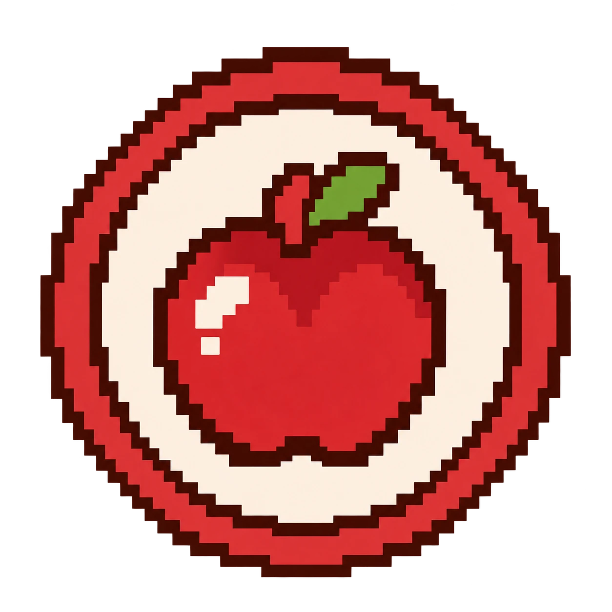

일기 · 한 장 카드 A/B 비교
세 항목(구조, 글씨체, 스티커)을 A안과 B안으로 나눠 봅니다. 고른 뒤 맨 아래 「선택 정리」에서 결과 문장을 복사해 팀에 보내세요. 창작 항목은 후보 2개씩이며 팀이 확정하기 전까지 [확인 필요]입니다.
1. 화면 구조 구조
A안: 현재 구조 유지그대로
완주 화면: [한 장 전체 보기] [일기 보기]
↓
장부 [내 여행]: 카드 목록 (같은 카드 + 일기 따로)
↓
상세: 카드 한 페이지, 일기 한 페이지 (분리)
- 이미 목업이 있어 바로 쓸 수 있습니다.
- 같은 카드가 완주 화면, 장부, 전체 보기 세 곳에 나옵니다.
- 일기 본문에 장소 정보가 카드와 반복됩니다.
- 하랑이 마무리 한 줄이 일기와 카드에 각각 있습니다.
B안: 자리 정리추천
완주 화면: 카드 미리보기 1장 + [저장·공유] [일기 읽기]
↓
장부 [내 여행]: 썸네일 목록만
↓
상세: 위 탭 [카드 | 일기], 같은 자리에서 전환
- 한 장 카드를 보여 주는 곳이 한 자리로 줄어듭니다.
- 일기는 장소별 짧은 문단과 마무리 한 줄로 줄일 수 있습니다.
- 완주 화면과 상세 화면을 새로 그려야 합니다.
- 탭 전환을 어디에 둘지 확인이 필요합니다 [확인 필요].
근거: storyboard/trip_card_mockup_v1.html (카드 단독 화면), storyboard/diary_mockup_v1.html (일기 단독 화면). 두 화면이 지금은 따로 있습니다.
2. 글씨체 창작 후보
A안: 주아 + 고운돋움 + 개구
제목 · 주아
중구 근대골목 걷기
본문 · 고운돋움
그날 장소 세 곳을 천천히 걸었어요.
하랑이 한 줄 · 개구
오늘 길이 한 장이 됐어요, 헤헤.
- 제목이 굵고 작은 화면에서도 읽힙니다.
- 하랑이 한 줄만 손글씨라 "하랑이가 썼다"는 느낌이 납니다.
- 글꼴 3개를 앱에 넣어야 합니다. 라이선스 [확인 필요].
B안: 나눔펜 제목 + 고딕 본문
제목 · 나눔펜
중구 근대골목 걷기
본문 · 고운돋움
그날 장소 세 곳을 천천히 걸었어요.
하랑이 한 줄 · 나눔펜
오늘 길이 한 장이 됐어요, 헤헤.
- 손글씨 느낌이 가장 강해서 "하랑이가 만든 것"이 한눈에 보입니다.
- 글꼴이 2개뿐이라 용량이 가볍습니다.
- 작은 글씨와 긴 문장에서 읽기가 어렵습니다.
- 스토리 9:16 카드처럼 큰 제목에서만 쓰는 것이 좋습니다.
글꼴은 Google Fonts 미리보기로만 불러왔습니다. 실제 앱 탑재 가능 여부와 라이선스는 [미검증]입니다. 샘플 문장은 창작 후보입니다.
3. 스티커 방식 창작 후보열쇠 재화 아님 (7-13)
A안: 자동만
하랑이와 걸은 오늘[완주 날짜]
중구 근대골목 걷기
맑음 · 체감 [○]℃
1[장소 1]

2[장소 2]
3[장소 3]
☀ 맑음 스티커 (창작)
오늘 길이 한 장이 됐어요, 헤헤.
- 편집이 없어 구현과 검수가 쉽습니다.
- 받은 적 없는 스티커가 붙지 않아 "방문한 만큼만" 원칙과 맞습니다.
- 매번 같은 모양이라 꾸민 느낌이 덜합니다.
B안: 자동 + 수동 (받은 스티커 중 골라 붙임)
하랑이와 걸은 오늘[완주 날짜]
중구 근대골목 걷기
맑음 · 체감 [○]℃
1[장소 1]
2[장소 2]
3[장소 3]
☀ 맑음 스티커 (창작)
🍎 골라 붙인 스티커
오늘 길이 한 장이 됐어요, 헤헤.
- 내가 고른 스티커로 카드가 달라져 애착이 생깁니다.
- 편집 화면과 저장 규칙을 따로 설계해야 합니다.
- 받은 스티커를 고르는 방식이 재화처럼 보일 수 있습니다 (7-13 확인 필요).
- "추가만" 원칙과 어떻게 맞출지 정해야 합니다 [결정 필요].
B안에서 붙일 수 있는 후보 (받은 것만 표시, 현재 이미지는 능금 하나뿐)
능금
이미지 있음
납작만두
납작만두
이미지 없음
부채
부채
이미지 없음
열쇠
열쇠
이미지 없음
창작 후보 (날씨 스티커): ① 해 모양 ② 구름 모양 / 날씨별 한 개만 자동으로 붙입니다. 팀이 한 쪽을 고릅니다 [결정 필요].
선택 정리
구조
글씨체
스티커
결정 필요 · 확인 필요
- 완주 화면과 상세 화면을 B안 구조로 다시 그릴지 [결정 필요]
- 상세 화면의 [카드 | 일기] 탭 위치 [확인 필요]
- 글꼴 라이선스와 앱 번들 방식 [확인 필요]
- 스티커를 자동만 할지, 수동도 넣을지 [결정 필요]
- 꾸민 카드를 저장한 뒤 수정할 수 있는지, "추가만" 원칙과의 관계 [결정 필요]
- 날씨 스티커 후보 ①·② 중 선택 [결정 필요]
출처
- storyboard/game_flow_story_v1.md 7-4절 (한 장 카드 구성), 7-8절 (공유 시 시각·좌표 제외), 7-13절 (열쇠는 재화 아님)
- storyboard/trip_card_mockup_v1.html (9:16 카드 단독 목업, 하랑이 한 줄 후보 2개)
- storyboard/diary_mockup_v1.html (일기 단독 목업, 마무리 한 줄 후보 2개)
- brand/character/images/stamp_nungeum.webp (능금 도장 이미지)